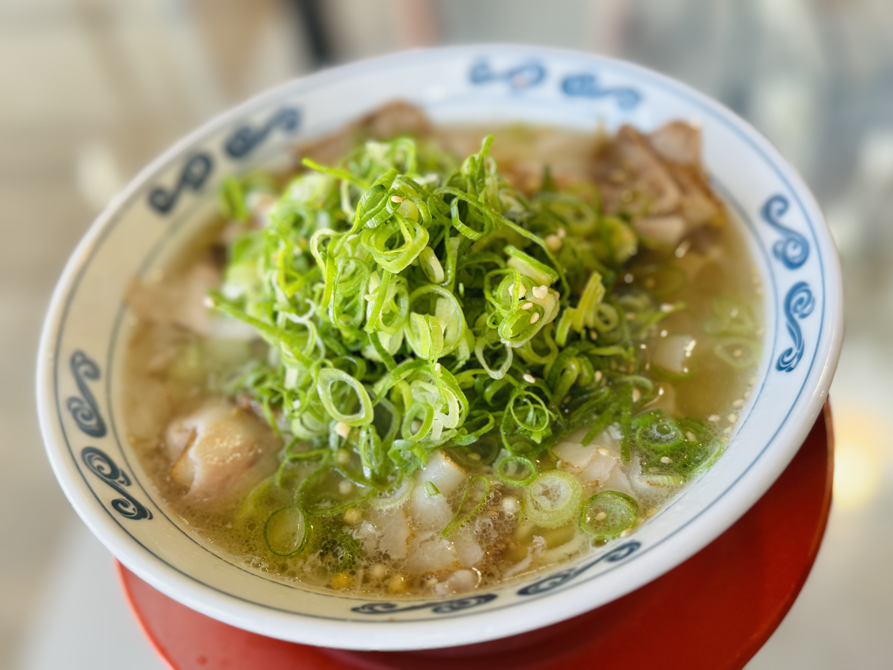
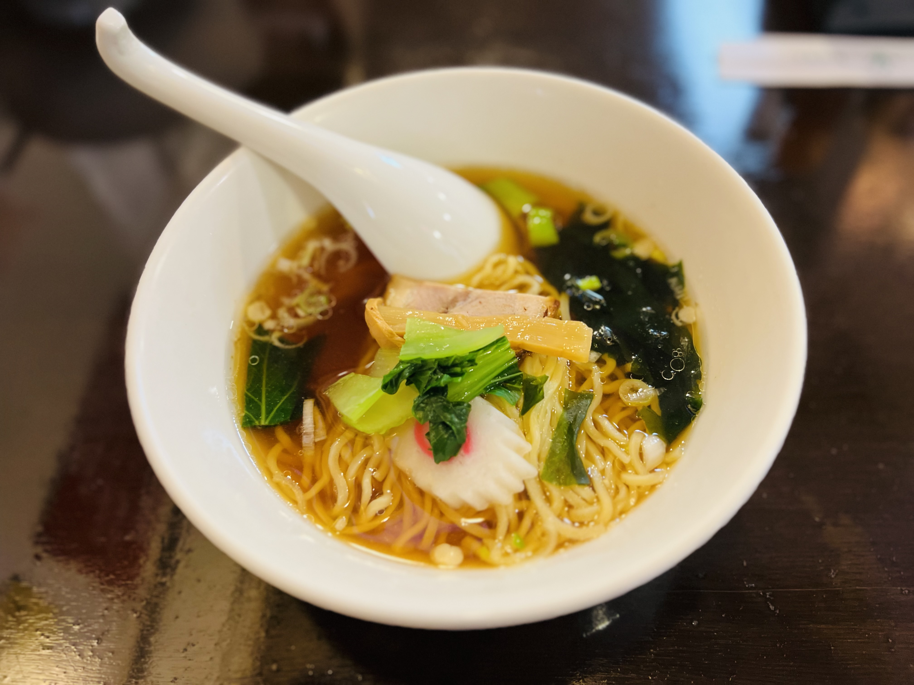
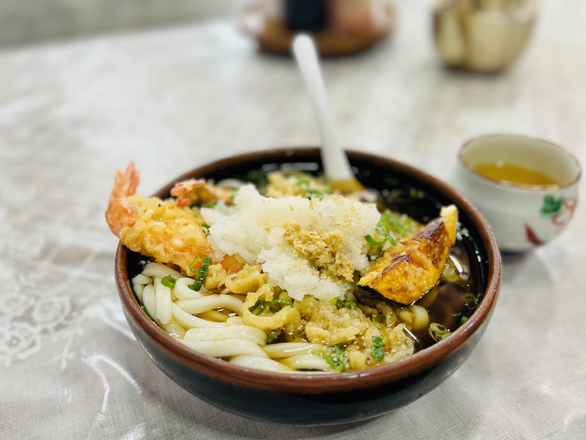

ねぎの香りが立つ一杯
山盛りの青ねぎと軽いスープ。ひと口目から香りが明るく、昼に食べたい。
まずはサンプルの食べ歩きログを入れています。実際に行った店名、日付、写真、感想に差し替えると、 そのまま自分だけのラーメン記録になります。
特に記憶に残った一杯をカードで紹介します。写真、スープ、麺、具、店の雰囲気を短く残すと見返しやすくなります。

山盛りの青ねぎと軽いスープ。ひと口目から香りが明るく、昼に食べたい。

ひと口目は軽く、最後に香りが残る。派手ではないけれど、また思い出すタイプ。

海老天と大根おろしで食べごたえ十分。ラーメン以外の麺ログも混ぜて残したい。
店名やエリアで検索できます。スープの種類で絞り込めるので、「今日は醤油だけ見たい」という探し方もできます。
| 日付 | 店名 | エリア | タイプ | また行きたい度 | メモ |
|---|---|---|---|---|---|
| 2026.05.03 | 中華そば 青葉台 | 目黒 | 醤油 | ★★★★★ | 鶏の香りがきれい。昼に軽く食べたい。 |
| 2026.04.26 | 味噌麺 こがね | 札幌 | 味噌 | ★★★★★ | 炒め野菜と生姜。寒い日の正解。 |
| 2026.04.18 | つけそば 濃月 | 池袋 | つけ麺 | ★★★★☆ | 太麺が主役。スープ割りまでうまい。 |
| 2026.04.06 | 塩そば 灯 | 神楽坂 | 塩 | ★★★★☆ | 透明感のあるスープ。柚子の香りが残る。 |
| 2026.03.29 | 博多麺 白 | 中洲 | 豚骨 | ★★★★★ | 細麺かため。替え玉まで一直線。 |
| 2026.03.17 | 支那そば 夕凪 | 吉祥寺 | 醤油 | ★★★★☆ | チャーシューが柔らかい。夜に合う。 |
| 2026.03.02 | 辛味噌 だるま | 高円寺 | 味噌 | ★★★★☆ | 辛さ控えめでも汗が出る。ご飯が欲しい。 |
| 2026.02.21 | 鯛塩 みなと | 横浜 | 塩 | ★★★★★ | 魚の旨みが上品。スープを飲み干した。 |
| 2026.02.10 | 黒マー油 麺屋丸 | 熊本 | 豚骨 | ★★★★☆ | 香ばしいマー油。パンチがある。 |
| 2026.01.28 | 淡麗つけ麺 透 | 蔵前 | つけ麺 | ★★★★☆ | 重すぎないつけ汁。平日の昼に良い。 |
| 2026.01.14 | 煮干し中華 風待ち | 荻窪 | 醤油 | ★★★★★ | 煮干し強め。好き嫌いは分かれそうだが好み。 |
| 2026.01.05 | 白味噌らぁめん 雪 | 京都 | 味噌 | ★★★★☆ | まろやかで甘い。旅先で食べたい味。 |
該当するラーメンログがありません。
店名とログはサンプルです。実際に食べ歩いた記録に差し替えてください。
食べた直後の印象を短く残すと、あとから読み返したときに味や店の空気を思い出しやすくなります。
長く書きすぎず、スープ、麺、具、店の雰囲気から一番残ったことを書く。
味の点数ではなく、自分が再訪したい気持ちで星を付ける。
丼の向き、レンゲ、具の位置が分かる写真にすると、一覧で見ても楽しい。